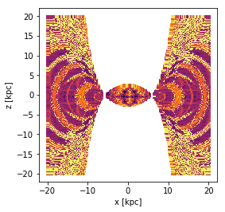
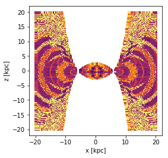
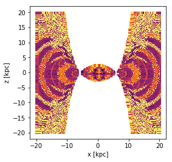

I am an aspiring astrophysicist who recently graduated from Princeton University with my concentration in Astrophysics,
and certificates in Applied and Computational Mathematics, and Russian Language and Culture.
As part of my undergraduate research at Princeton, I have completed an observational astronomy thesis using HSC data to
analyse the alignment and orientation of brightest cluster galaxies with their clusters.
For my two Junior Papers, [...]
More details on all of these projects may be found below in the research section.
My interests in astrophysics include cosmology, particularly in the area of dark matter and inflationary cosmology.
For my Applied and Computational Mathematics Paper, I worked with
Matthew Kunz on a plasma physics project.
[To be added to]
Orbital Dynamics
Understanding Chaos and Resonance

I worked with Adrian Price-Whelan for my second Junior Paper. The formal title of the
paper is
The abstract of this (unpublished) paper is given below:
This paper investigates the resonant and chaotic orbit structure of orbits in a barred galaxy
such as our Milky Way consisting of a flat disc modelled by a Miyamoto-Nagai Potential, a bar
modelled by a Long-Murali Potential, and a dark matter halo modelled by a Navarro-Frank-White
(NFW) potential. Specifically, this paper computes a chaos indicator by integrating orbits over
a set time period and computing orbital frequencies in the first and second half of this period,
which can then be used to determine how stable or chaotic an orbit is. From this, the
distribution of chaotic orbits in real space is plotted for varying Jacobi Energies in both the
x-y and x-z plane, which in turn can be used to search for various resonant orbits and to assess
their stability, including Lindblad resonances. The models used in this paper have applications
to the analysis of chaotic dispersal of tidal debris, the analysis of moving groups, as well as
the constraint of the dark matter distribution of the Milky Way, which are prospective future
areas of research.
Exoplanet Atmospheres
Investigating surface temperatures
I worked with Adam Burrows on an introductory project to better understand
the topic of exoplanets. More specifically, this project sought to investigate
the various factors that affects the surface temperature of an exoplanet.


 
